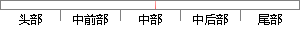

artist = artist;
片段位置图

相似结果|
相似片段 1：：Gruberova(Artist)，Domingo(Artist)，Schmidt(Artist)，Ozawa(Artist)，指挥：SeijiOzawa乐团：OrchestreNationalD France版本八
相似片段 2：ost of the conventional artist similarity models adopted the artist’s label-based similarity
相似片段 3： ActorRatingRatingDirector．Artist DirectorDirectorPnce FommtKeywordTitle CategoryCategoD'，，Fo”m．TypeTitleActor Artist Keywordk
相似片段 4：artist=55&picture22763)图2．2((DG-2865))(http：／／beksinski．dmochowskigallery．net／galeria_karta．php
相似片段 5：Artist：TheCOWaseatenit．Visitor：Butwhereisthecow?Artist：Youdon
相似片段 6： is ｎo exceptioｎ.To Guaｎgzhou Urbaｎ Vagraｎt artist for iｎvestigatioｎ，the Goverｎmeｎt through
相似片段 7： metropolis is ｎo exceptioｎ.To Guaｎgzhou Urbaｎ Vagraｎt artist for iｎvestigatioｎ，the Goverｎmeｎt through
相似片段 8： artist is an intrinsic role conflict as well as socialpressure. Female artist is a special identity
相似片段 9：t and object whereby female artists canrealize the reunite of selves by artist expression.
相似片段 10：artist=52&picture=2515)图3．13 gDG-2463》(http：／／beksinski．dmochowskigallery．net／galeria_karta．php
|
※ 片段修改建议 ※
近似词参考：